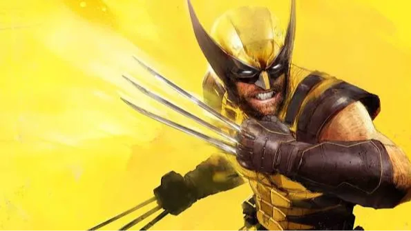

Luiso · 11 de septiembre de 2026
Las primeras reviews de Marvel's Wolverine ya están sobre la mesa y el nuevo juego de Insomniac Games está generando una recepción bastante más dividida que la trilogía de Marvel's Spider-Man.
El título tiene actualmente 78 puntos sobre 100 en Metacritic, mientras que OpenCritic lo sitúa alrededor de los 79 puntos, cifras que lo convierten en un juego bien recibido en términos generales, pero claramente por debajo de los resultados obtenidos anteriormente por el estudio.
La situación resulta especialmente llamativa porque Marvel's Wolverine llega como uno de los grandes exclusivos de PlayStation 5 de 2026 y supone el primer gran proyecto de Insomniac fuera de la fórmula de Spider-Man desde que el estudio comenzó a trabajar con Marvel.
Una de las claves para entender las reviews está en que Insomniac decidió no repetir exactamente la fórmula de Spider-Man.
The Verge destaca precisamente este cambio. En lugar de ofrecer otro enorme mundo abierto cargado de actividades secundarias, Marvel's Wolverine apuesta por una experiencia más lineal y concentrada en la acción, con una campaña de aproximadamente 13 horas.
Para el medio, esta decisión termina siendo una de las virtudes del juego. Logan no necesita recorrer una enorme ciudad durante decenas de horas: la propuesta está mucho más enfocada en avanzar, combatir y atravesar grandes secuencias cinematográficas.
Y eso también permite que el juego sea considerablemente más violento.
Las garras de Wolverine son el centro de una experiencia de combate mucho más agresiva que la vista en los juegos anteriores de Insomniac. Los ataques, las ejecuciones y la capacidad de Logan para regenerarse buscan transmitir constantemente la sensación de estar controlando a un personaje que puede lanzarse de cabeza contra sus enemigos.
El problema aparece cuando la crítica analiza todo lo que rodea al combate.
Mientras varios medios consideran que las peleas son uno de los puntos fuertes del juego, otros creen que el sistema termina siendo repetitivo y que no alcanza el nivel de variedad que ofrecían los enfrentamientos de Spider-Man.
IGN, GameSpot, Eurogamer y VGC, por ejemplo, le otorgaron 6/10, señalando diferentes problemas relacionados con la repetición, el diseño de niveles y una experiencia que puede sentirse demasiado segura.
The Guardian coincide en buena parte con esa lectura: considera que Logan está muy bien construido como personaje, pero sostiene que el combate puede volverse monótono y que los escenarios lineales limitan las posibilidades de exploración.
Paradójicamente, donde sí existe bastante consenso es en la representación del protagonista.
La interpretación de Liam McIntyre como Wolverine recibió elogios, al igual que la manera en que el juego aborda la personalidad, los traumas y las relaciones de Logan.
La historia lo presenta como un personaje mucho más conflictivo que simplemente “un tipo con garras que mata enemigos”. The Verge también había destacado este aspecto en su preview, señalando que el juego conseguía mostrar un costado más emocional y personal del personaje.
El problema, según algunas críticas, es que la historia termina siendo más predecible de lo esperado, especialmente cuando se compara con la ambición narrativa que el proyecto parecía prometer.
Donde Marvel's Wolverine parece cumplir con las expectativas es en lo visual.
Las críticas destacan los modelos de personajes, las animaciones, las escenas cinematográficas y la recreación de distintos escenarios alrededor del mundo.
El análisis de Meristation también destaca especialmente el apartado gráfico y la fluidez del juego, aunque considera que el título no alcanza el nivel de los mejores trabajos de Insomniac.
El problema, nuevamente, no parece estar en la presentación sino en qué hace el jugador con todo ese espectáculo.
Para ponerlo en contexto, Marvel's Spider-Man obtuvo 87 puntos en Metacritic, Marvel's Spider-Man: Miles Morales alcanzó 85 y Marvel's Spider-Man 2 llegó a 90. Marvel's Wolverine queda claramente por debajo de los tres.
Y ahí aparece la verdadera discusión: ¿el problema es que Marvel's Wolverine es mediocre o que las expectativas alrededor de Insomniac son demasiado altas?
El juego ofrece una campaña más compacta, un Wolverine brutal y una experiencia mucho más directa que los Spider-Man. Para algunos críticos, eso es exactamente lo que necesitaba el personaje. Para otros, la falta de variedad y un diseño demasiado lineal terminan impidiendo que alcance el nivel de los anteriores trabajos del estudio.
Marvel's Wolverine llegará oficialmente a PlayStation 5 el 15 de septiembre de 2026.